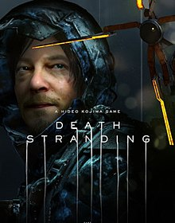

Final Fantasy VII Remake
- Released in 2020
- Composed by: Masashi Hamauzu, Mitsuto Suzuki, and Nobuo Uematsu
- Listen to the soundtrack
- Learn more about the game
Death Stranding
- Released in 2019
- Composed by: Ludvig Forssell
- Listen to the soundtrack
- Learn more about the game
Read Dead Redemption 2

- Released in 2018
- Composed by: Woody Jackson
- Listen to the soundtrack
- Learn more about the game
Nier: Automata
- Released in 2017
- Composed by: Keiichi Okabe, Keigo Hoashi, and Kuniyuki Takahashi
- Listen to the soundtrack on spotify or apple music
- Learn more about the game
Doom
- Released in 2016
- Composed by: Mick Gordon
- Listen to the soundtrack
- Learn more about the game
Metal Gear Solid V: The Phantom Pain

- Released in 2015
- Composed by: Ludvig Forsell, Justin Burnett, and Daniel James
- Listen to the soundtrack
- Learn more about the game